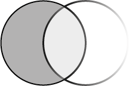

Acerca de mí
Soy Juan Armando Saucedo Álvarez, tengo experiencia en el sector del Diseño Gráfico y en producciones audiovisuales. Los servicios en los que me especializo incluyen la animación en 2D, producciones publicitarias y audiovisuales, con una especialización en la edición de audio y video.
Cuento con títulos como TSU en Lengua Inglesa y TSU en Diseño Digital, área Animación.
